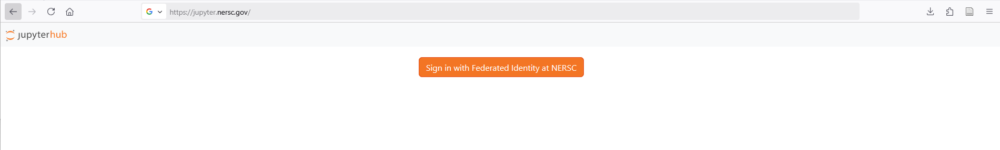
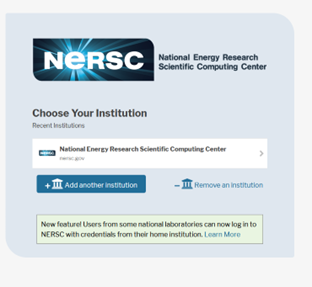
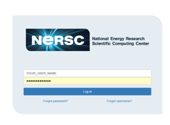
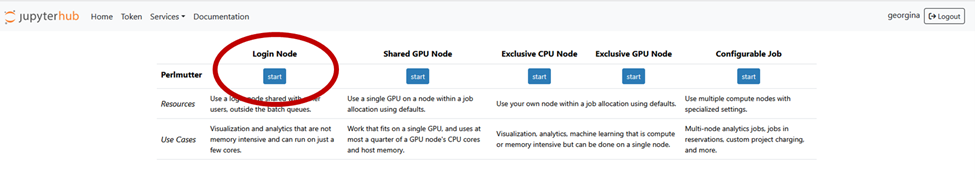
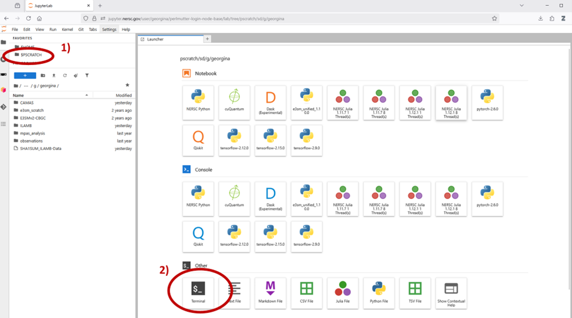
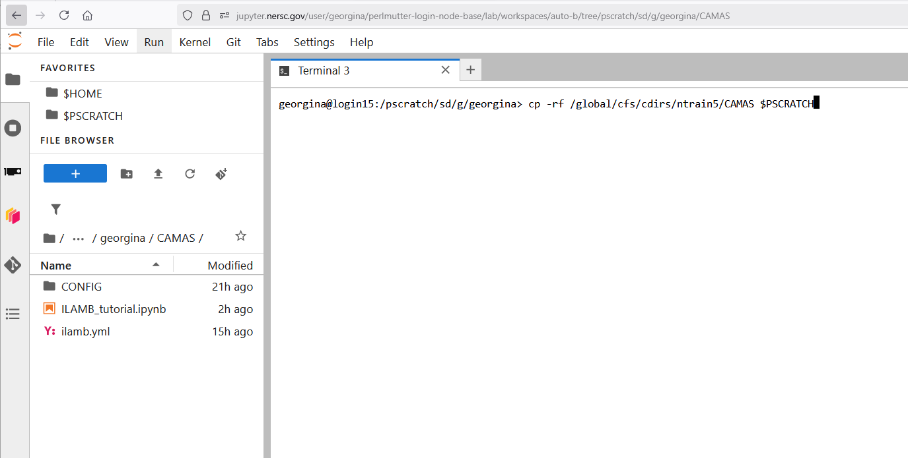
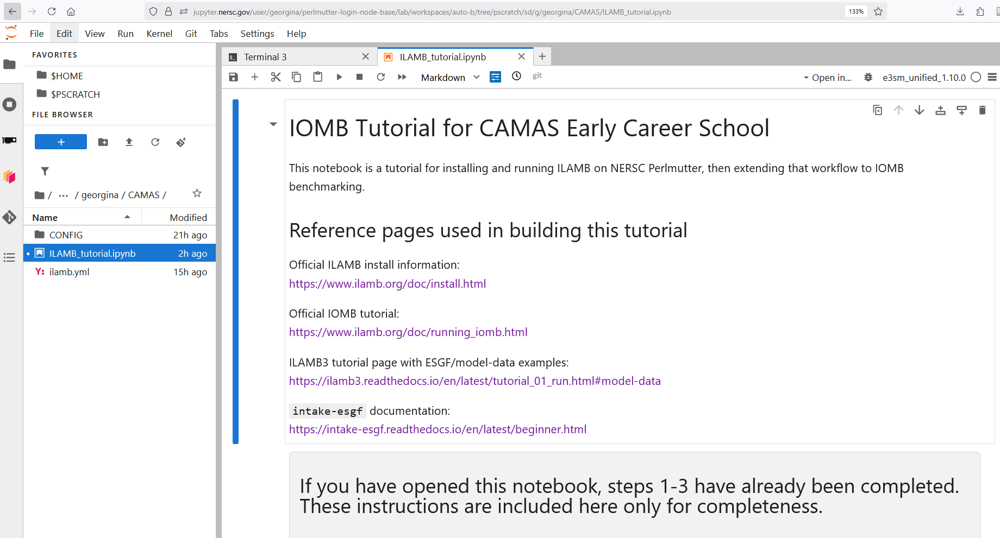

This page provides the quick-start instructions for accessing the tutorial on NERSC Perlmutter.
Go to:
https://jupyter.nersc.gov/hub/login

This will take you to the NERSC log in page

This will then prompt you for your Multi-Factor-Authentication (MFA). You will likely be getting this from an authenticator app on your phone

Click the START button to launch a login node.

Click $PSCRATCH in the left file browser.
Open Launcher → Terminal.
Example path:
/pscratch/sd/g/your_username

Run this command in the terminal:
cp -rf /global/cfs/cdirs/ntrain5/CAMAS $PSCRATCH

Navigate to:
$PSCRATCH → CAMAS
Open:
ILAMB_tutorial.ipynb
